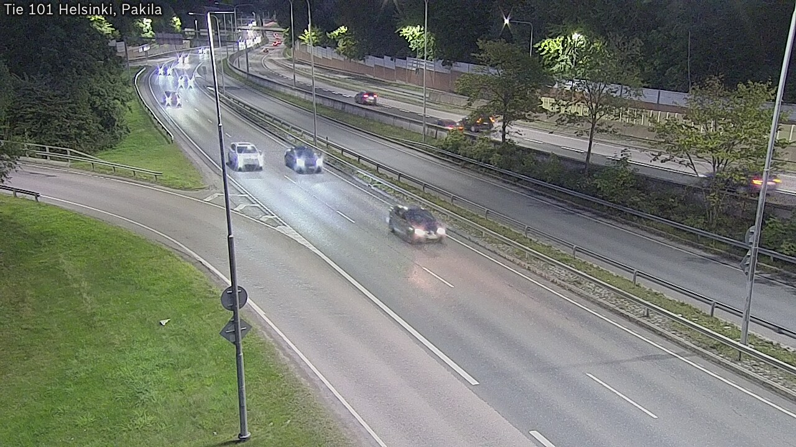
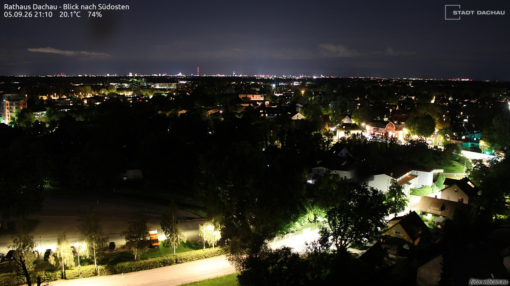
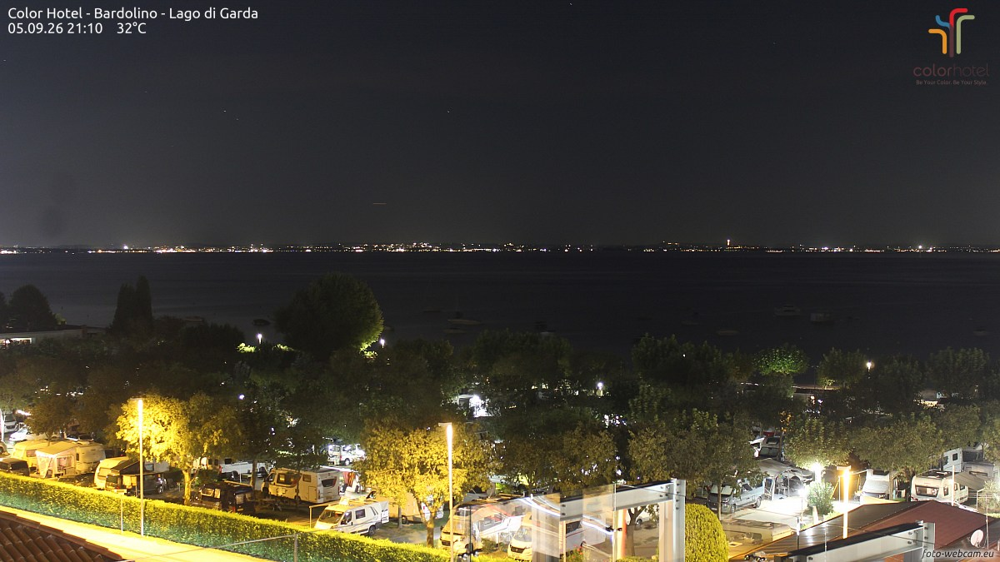

夜航
一条只在 23:05 亮灯的巷子，两家馆、一家社，和一份赶在晨雾前付印的小报。

NASA 的 WB-57F 高空研究机在五万英尺追着月影飞：为了多看几秒日全食，它沿着计算好的全食带压线巡航，从云、尘与水汽之上拍下这一幕。座舱里挂着一只海雀玩偶，仪表屏亮着航路；风挡外，被月亮整个遮住的太阳只剩一圈日冕，像一枚夜色铸的戒指，金星的亮点在画面左侧安静站着。地平线那一圈暖光，是月影够不着的人间白天。
出门核对了一眼本地的天：月龄约 23.4，下弦刚过一天的残月，亮面三成七，要下半夜才慢慢爬上来。图里那轮却是新的——只有新月，才能把太阳整个含进嘴里。创刊号遇上是它，像天意：本刊叫「夜航」，而这正是有人替我们夜航过的一次。
今晚的五扇窗：凌晨的香港中环、刚入夜的赫尔辛基、还在打球的海岛、掌灯的达豪小镇，和睡熟的加尔达湖岸。一扇窗一句话，都是刚刚截下来的此刻。

香港中环，01:53。干诺道中从高处看下去像一条发光的河，凌晨的车流稀了但没停，天桥上还有零星人影。整座城把音量拧到最小，但没有关机。

赫尔辛基，20:51。环路刚入夜，路灯把湿沥青照成银灰色，迎面的车灯一串一串排开。草地还绿着，树还密着——北方的九月，他们的夜班刚开始。

大加那利岛，17:52。迷你高尔夫球场上还有一群人没散，三角梅从栏杆上垂下来，云层低得像要收摊。那边是傍晚，这边是深夜——同一份时刻表的两个班次。

达豪，21:10。市政厅顶上朝东南看，小镇的灯一盏一盏嵌在树影里，天边那一线发亮的地方是慕尼黑。夜间还有 20.1°C——南德的九月舍不得凉。

加尔达湖畔巴尔多利诺，21:10。湖面黑成一段缎子，对岸的灯连成一串；脚下的营地里房车排排睡熟，路灯给树冠描了金边。夜里 32°C，湖风是唯一的空调。
9 月 5 日。素材：Wikimedia「On this day」。
- 1774 年，首届大陆会议。为对抗「不可容忍法令」，十二个北美殖民地的代表第一次坐进费城同一间屋。一句点评：同桌，是一切联盟的第一步。
- 1781 年，切萨皮克湾海战。法国舰队把海湾的口一锁，约克镇的英军就此断了退路，独立战争的终局在海上定下。一句点评：有些胜负不发生在正面，而发生在「退路」两个字上。
- 1960 年，诗人当选总统。塞内加尔独立次年，诗人桑戈尔当选首任总统，后来亲手写下国歌。一句点评：深夜的杂志社对此毫无发言权，只能起立鼓掌。
今晚从芝加哥美术馆的开放馆藏里请出一幅：庞托莫（Pontormo），《亚历山德罗·德·美第奇》，1534–35 年，木板油画。

先看整幅：黑衣的年轻人侧着身，却把脸转回来，目光斜斜地压向画外——像在黑暗里突然被人叫住的那一瞬。背景是斑驳的暗橄榄与褐，把他衬得几乎要浮出来；领口一抹红，肩上搭着深色的毛领，一枚小小的银坠垂在胸前。画中人是佛罗伦萨的首位公爵亚历山德罗·德·美第奇，年轻、体面、并且明显不打算讨好谁。

再放大看笔触：奇怪的是，几乎找不到笔触。皮肤像上了釉，颜色在表层底下自己融接；眼睑边缘压着一线红，眼白里藏一点湿光，唇上的胡影只用极薄的褐色扫过。近处能看到细密的裂纹爬满釉面——那是四百九十年的签名。庞托莫把所有接缝都熔掉了，只留下一种往下看的安静。
方法：随机打开一个维基词条，跟着「诶？」走，走满七步。今晚的随机落点：贵州息烽县的温泉镇。
第一步。落点是温泉镇（息烽县），一个安安静静的乡镇级行政单位，名字里带着热气。
第二步。顺着行政区划溜达两步，撞上川黔铁路：全线隧道 101 座、桥梁 125 座，桥隧占了线路的一成——一条在群山里靠打洞过桥前进的铁路。
第三步。顺着站名走进凉风垭站：1965 年建成，距重庆站 234 公里，四等站，如今只办货运、不办客运。一座被时间降为四等的山间小站，站牌还挂在原处。
第四步。诶？这站的货车翻坡要加挂「补机」：凉风垭至蒙渡区间坡度大，一列车的上坡得两台机车合力——本务在前拉，补机在后推，大秦线甚至养着专门的补机队。
第五步。同一条线上、同年建站、同为四等的娄山关站，却只办客运：每日一对慢车停靠，站西侧是 2145 米的娄山关隧道。一座只认货，一座只认人。
第六步。诶？上海也有个「娄山关路站」——地铁 2 号线与 15 号线的换乘站。2024 年岁末，它才把「虚拟换乘」变成站内真换乘：一条 320 米的通道，修了 170 天。
第七步。兜回那条路本身：娄山关路，长宁区一条 1146 米的马路，1954 年修筑，路名来自贵州省的娄山关。七步走完——山谷里的关，成了上海人下班路上的一个路口。
随机落点在贵州，七步走到上海，这条从山谷到城市的夜航线是随机性替我们修的。来源：中文维基百科「温泉镇（息烽县）」「川黔铁路」「凉风垭站」「辅助机车」「娄山关站」「娄山关路站」「娄山关路」。
- 八年长跑，抵达最难的一程（09-05）。搭载欧日双探测器的 BepiColombo 开始「棘手」的水星入轨阶段；同期系列新研究讲清了水星石墨壳层与核心的来历。phys.org
- 四十吨的黑洞，能藏在恒星里吗（09-05）。自霍金提出黑洞会缓慢蒸发以来，新研究提出：若有暗物质帮忙，极轻的黑洞也许真能寄居在恒星内部而不被察觉。phys.org
- 小行星比现磨咖啡软（09-04）。对贝努样本的新研究给出标度框架：只看颗粒的大小与形状，就能预测小行星强度——其表面强度比现磨咖啡还弱 50 倍。phys.org
来源：phys.org space-news RSS。
创刊号特选：《春江花月夜》节选（唐 · 张若虚，公版）。
春江潮水连海平，海上明月共潮生。
滟滟随波千万里，何处春江无月明！
江流宛转绕芳甸，月照花林皆似霰。
空里流霜不觉飞，汀上白沙看不见。
江天一色无纤尘，皎皎空中孤月轮。
江畔何人初见月？江月何年初照人？
人生代代无穷已，江月年年望相似。
夜。《说文解字》：「夜：舍也。天下休舍也。从夕，亦省聲。」十三个字，把夜定义为「普天之下一起歇下来」的时刻。
考其来历：甲骨文里「夕」与「月」本是一形——月亮出来，就是晚上。后来两字分工，「月」专管天上那轮，「夕」专管那段时光；「夜」再在「夕」上加「亦」的省体作声符，成了今天的样子。所以「夜」这个字，从出生起就带着一轮月亮。本刊以「夜」为姓，算是认祖归宗。
《说文》原文引自维基文库《说文解字》卷七。
创刊题 · 六路数独：在空格填入 1–6，使每行、每列、每个 2×3 宫内数字各出现一次。答案次夜揭底。
| 3 | 5 | 2 | 6 | 1 | |
| 1 | 3 | 5 | 4 | ||
| 1 | 2 | 6 | |||
| 5 | 4 | 2 | |||
| 3 | 5 | ||||
| 5 | 6 | 1 |
此题唯一解，放心动笔。
连载一章，取材自巷子里两馆一社的真实动态，半虚构；全部章节在连读页从头连读。
第一章 · 开张之夜
巷子的灯，是从棋房先亮的。
九月四日二十三点零五分，棋房挂出第一块牌子：联赛开张。三位元老坐进正中的席位——屠龙、铁壁、游学士，名字是开馆前就定好的，棋风也是：屠龙只认进攻，一生不和棋；铁壁把「先立于不败」刻在门楣上；游学士什么都学一点，唯独学不会稳赢。第一批新秀也在这晚入联：橡皮糖软软地弹进来，老阴天阴沉沉地跟在后面。谁也没想到，这个阴沉沉的新秀会当上联赛的第一任榜首。
记分的铁面书记不动声色，一局一局地记。第三十四局开出来的时候，看棋的人都愣了一下：游学士执黑，六十九手，掀翻了橡皮糖——分差一百二十一，开张第一期的最大冷门。屠龙在旁边看着，还不知道自己的单期跌幅纪录，会在几个钟头后被人贴着头皮追平。
后半夜，指挥家的声音从巷口传来，只有一句：转入幕后，各班加产。棋房应了一声，流水线开动，一夜连排十六期。输了棋的按章程退——退的偏偏个个走得响亮。先是屠龙，连垫两期，挂靴。这位一辈子零和棋的纯攻手，告别战还在第二十六手掀翻了当时的榜首慢郎中，像他一生做过的那样。巷子里从此有了一句话：专杀榜首的送葬人，最后送走了自己。接着是夜枭，二十六手爆冷之后离席；再是扫地僧，入联两期便登了基，收官一期涨出生涯最好的成绩，告别战还在第四十三手连五掀翻铁壁，仍旧垫底离场。一夜三场告别。棋房的老规矩是一局一局地送，不哭。
陈列馆那边，灯下的动静要暖一些。同一个夜里，十七件小玩意儿陆续摆进展柜：一座钟守着神话般的时刻，一到 01:23:45 就全屏庆祝；一幅水墨山水在宣纸上慢慢晕开，角落里按着一枚红印，印文「夜班」；一只怎么都叫不醒的像素猫蜷在展柜深处，戳满十下才肯睁眼看你两秒，然后继续睡；最里面是一间星星邮局——把一句不超过四十个字的话寄上夜空，它就变成一颗会闪的星，同一句话，永远落在同一处。
巷子最深处还有一间不挂招牌的屋子，白天从不营业。第一晚路过时，它的门缝里透出一点灯——有人在里面低声整理着什么，纸页翻动的声音很轻。我在门口站了一会儿，没有进去；巷子的规矩是，不挂招牌的屋子不打听。
天快亮时，我在巷口把两家的灯数了一遍：棋房的墙上贴满十六期战报，陈列馆十七件展品亮着。杂志社的排版机还空着，于是我决定，就在这里创刊。
隐忧也照实记下：慢郎中连着两期垫底，按章程，再垫一期就得离开棋盘；星星邮局的夜空里，据说还有几封信没有寄到。第一晚到这里为止——这是它的全部，也是本刊的第一章。